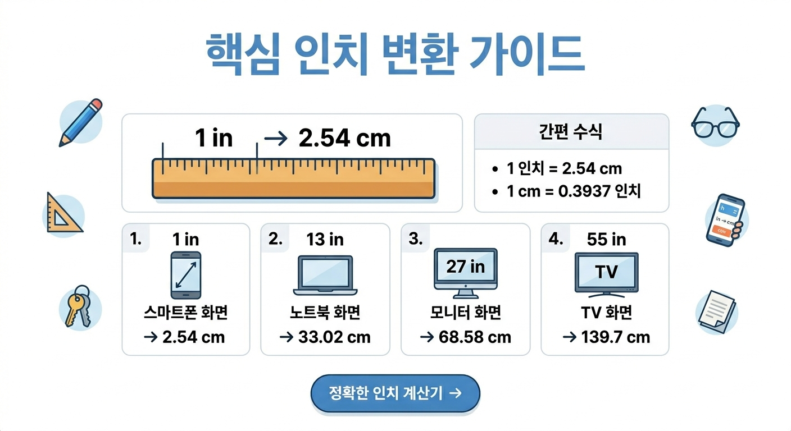

인치(inch)는 야드파운드법과 미국 단위계에서 사용하는 가장 기본적인 길이 단위 중 하나입니다.
현대 국제 표준에 의하면 1인치는 정확하게 25.4밀리미터(mm)로 정의되어 있습니다.
인치라는 명칭은 라틴어에서 12분의 1을 뜻하는 'uncia'라는 단어에서 그 뿌리를 찾을 수 있습니다.
고대 로마 시대부터 사용되었으며 당시에는 성인 남성의 엄지손가락 너비를 기준으로 한 마디 정도의 길이를 의미했습니다.
영국 왕실에서는 보리알 세 알을 일렬로 늘어놓은 길이를 기준으로 삼는 등 시대에 따라 기준이 변해오다 현재의 미터법 기반 수치로 고정되었습니다.
전 세계 대부분의 국가가 미터법을 표준으로 삼고 있지만 여전히 인치를 주력으로 사용하는 곳들이 존재합니다.
가장 대표적인 국가는 미국이며 그 외에 미얀마와 라이베리아가 일상 생활에서 인치 단위를 광범위하게 사용합니다.
기술적인 영역에서는 미국의 영향력으로 인해 전 세계 공통으로 인치 규격이 통용되는 경우가 많습니다.
대한민국은 1964년부터 법정 계량 단위로 미터법을 전면 도입하여 센티미터(cm)와 미터(m)를 공식적으로 사용하고 있습니다.
전통적인 척관법 단위인 '치'나 '자'는 현재 상거래에서 사용이 금지되어 있으며 오직 미터법 사용이 원칙입니다.
그럼에도 불구하고 특정 산업 분야나 수입 제품의 규격을 설명할 때는 여전히 인치 표기가 병행되고 있는 실정입니다.

아래 표는 1인치부터 100인치까지의 수치를 센티미터로 정확하게 환산한 데이터입니다.
| 인치(in) | 센티미터(cm) | 인치(in) | 센티미터(cm) |
|---|---|---|---|
| 1 in | 2.54 cm | 51 in | 129.54 cm |
| 2 in | 5.08 cm | 52 in | 132.08 cm |
| 3 in | 7.62 cm | 53 in | 134.62 cm |
| 4 in | 10.16 cm | 54 in | 137.16 cm |
| 5 in | 12.70 cm | 55 in | 139.70 cm |
| 6 in | 15.24 cm | 56 in | 142.24 cm |
| 7 in | 17.78 cm | 57 in | 144.78 cm |
| 8 in | 20.32 cm | 58 in | 147.32 cm |
| 9 in | 22.86 cm | 59 in | 149.86 cm |
| 10 in | 25.40 cm | 60 in | 152.40 cm |
| 11 in | 27.94 cm | 61 in | 154.94 cm |
| 12 in | 30.48 cm | 62 in | 157.48 cm |
| 13 in | 33.02 cm | 63 in | 160.02 cm |
| 14 in | 35.56 cm | 64 in | 162.56 cm |
| 15 in | 38.10 cm | 65 in | 165.10 cm |
| 16 in | 40.64 cm | 66 in | 167.64 cm |
| 17 in | 43.18 cm | 67 in | 170.18 cm |
| 18 in | 45.72 cm | 68 in | 172.72 cm |
| 19 in | 48.26 cm | 69 in | 175.26 cm |
| 20 in | 50.80 cm | 70 in | 177.80 cm |
| 21 in | 53.34 cm | 71 in | 180.34 cm |
| 22 in | 55.88 cm | 72 in | 182.88 cm |
| 23 in | 58.42 cm | 73 in | 185.42 cm |
| 24 in | 60.96 cm | 74 in | 187.96 cm |
| 25 in | 63.50 cm | 75 in | 190.50 cm |
| 26 in | 66.04 cm | 76 in | 193.04 cm |
| 27 in | 68.58 cm | 77 in | 195.58 cm |
| 28 in | 71.12 cm | 78 in | 198.12 cm |
| 29 in | 73.66 cm | 79 in | 200.66 cm |
| 30 in | 76.20 cm | 80 in | 203.20 cm |
| 31 in | 78.74 cm | 81 in | 205.74 cm |
| 32 in | 81.28 cm | 82 in | 208.28 cm |
| 33 in | 83.82 cm | 83 in | 210.82 cm |
| 34 in | 86.36 cm | 84 in | 213.36 cm |
| 35 in | 88.90 cm | 85 in | 215.90 cm |
| 36 in | 91.44 cm | 86 in | 218.44 cm |
| 37 in | 93.98 cm | 87 in | 220.98 cm |
| 38 in | 96.52 cm | 88 in | 223.52 cm |
| 39 in | 99.06 cm | 89 in | 226.06 cm |
| 40 in | 101.60 cm | 90 in | 228.60 cm |
| 41 in | 104.14 cm | 91 in | 231.14 cm |
| 42 in | 106.68 cm | 92 in | 233.68 cm |
| 43 in | 109.22 cm | 93 in | 236.22 cm |
| 44 in | 111.76 cm | 94 in | 238.76 cm |
| 45 in | 114.30 cm | 95 in | 241.30 cm |
| 46 in | 116.84 cm | 96 in | 243.84 cm |
| 47 in | 119.38 cm | 97 in | 246.38 cm |
| 48 in | 121.92 cm | 98 in | 248.92 cm |
| 49 in | 124.46 cm | 99 in | 251.46 cm |
| 50 in | 127.00 cm | 100 in | 254.00 cm |
인치를 센티미터로 변환할 때 대략 2.5를 곱하는 방식은 일상적인 대화에서는 유용할 수 있습니다.
하지만 1인치가 2.54cm라는 점을 감안하면 수치가 커질수록 오차 범위는 걷잡을 수 없이 늘어나게 됩니다.
특히 해외 직구로 가구를 구매하거나 정밀 부품을 주문할 때 이러한 오차는 치명적인 반품 사유가 될 수 있습니다.
수동으로 계산하는 번거로움을 줄이고 소수점 단위의 정확도까지 확보하기 위해서는 전용 계산 도구가 필수입니다.
실수를 미연에 방지하고 단 몇 초 만에 정확한 수치를 얻는 것이 업무와 쇼핑의 효율을 높이는 지름길입니다.
정확한 단위 변환은 불필요한 비용 낭비를 막고 작업의 완성도를 높여주는 가장 기초적인 단계입니다.
복잡한 수식 없이도 언제 어디서나 편리하게 이용할 수 있는 전문 계산기를 통해 스마트한 생활을 누려보시길 바랍니다.